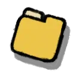

A room about writing
As expected after reading the title, here you can find some of my writing projects.
-

Proses
-
De Todos os Males, o Melhor que Poderia Acontecer [EN][PT-BR][10/06/2024]
-
Another random story from a random context.
This text was written as a school essay; apparently, the teacher's goal was to encourage the students to create something by their own, since there was no theme or rule -- we only needed to write. Although the cool attempt, most of the class ended up just copying and pasting from ChatGPT.
Otherwise, an artistically inclined friend -- I'll call him that since I don't have his permission to share his name here -- and I got interested and we decided to create our own stories and put a minimal effort to this specific activity -- let's say we're a little tired of school.
In the end, he wrote a fantastic story about a Venezuelan girl who explores her dreams, while I wrote this story about a drunk guy who goes to pee. Amazing constrast, isn't it? I simply love our friendship.
Oh! And an important note to do: the title "De Todos os Males, o Melhor que Poderia Acontecer" is stolen from a song of Gabriel Orling! I love his songs and wanted to do a reference.
-- --
Mesmo 'num calor insuportável d'um país tropical, todos os garotos no baile -- me incluindo nessa lista -- insistiam em ternos de tecido grosso com gravatas d'um tecido ainda mais grosso; gravatas essas que tinham sempre a mesma cor azul-turquesa horrível -- eu as odiava plenamente, sempre preferi as de cor sólida comum, sem estampa ou qualquer tipo de barrocagem inútil. No fim, eu não ligava muito: continuava sentado, quase como arrogante, 'numa dessas mesas que estão sempre longe da pista de dança. Também aproveitava para tomar um desses drinks alcoólicos que só adolescentes têm coragem o suficiente para beber. Ó!, tão medíocres e mesquinhos esses adolescentes!, eu resmungava, mesquinho e medíocre.
[Read More]
-
-
Cadê o pires? [EN][PT-BR][09/19/2024]
-
The text below, dated from May 21st, 2024, is an unfinished project to learn more about elisions. Despite some people told me to finish it, I am not going to. The metaphors are good and I loved the text style, but it became extremely confused and meaningless while I was writing it.
Even though, if you're interesting in how it would end: the central character (an old woman with Alzheimer's) would forget everything she thought during the entire text.
And a fun-fact about this text: Everyone I showed it to didn't understand it, but my grammar teacher, who smiled and laughed little laughs.
-- --
O café pingou’m pouco de si sobre a mesinha de’star quando o peguei. Eu’spiei dentro da xícara’marela qu’agora’braçava minhas mãos, talvez na tentativa de entender por que dividira tanto de si com tantos outros. Então ouvi o piano d’eternidade tocand’entre pare’des’egundos — ou foram’inutos? —, e’ntão percebi não se lembrar se havia recordado d’alg[u]’esquecid’ou esquecido d’alg[u]’irrecordável. E à luz desse pensament’entristeci-me quase como se viss’uma memória perdid’um passado não mais existente que se confunde co’existente no meio d’inexistente, assim como se faz uma paisagem através d’uma port’enodoada.
[Read More]
-
-
-
Blog
-

How to build and install SDL library [EN][10/08/2024]
-
First of all, I need to say that the 'tutorial' below is not quite a tutorial. I know this sounds contradictory, but that's because I am not doing it to teach people; I'm actually writing this post 'cause, at the moment, I am learning SDL and wanted an easy place to remember the commands to build and install this development library.
With this said: welcome, daniel. Here you'll learn how you can build and install SDL. The first thing you need to do is clone the SDL repo with Git:
After cloning the repo, you'll need to go into the SDL folder (usually called "SDL" or "SDL_main") and create a new folder inside it called "build".
[Read More]
-
-
Windy Day [10/03/2024]
-
Today is a windy day. I wasn't expecting this kind of weather 'cause it's a little uncommon here where I live -- perhaps because the usual weather here is very and windless.
Despite it's afternoon, my bedroom window is open. And despite the windy, my fan is on -- after all, as I just said, it's very warm here. Sometimes the life gifts us with these calm and peaceful days. Unfortunately, most of my friends are having trouble breathing normally because of the recent fires in our region. Fortunately, I am o.k., breathing as good as on an ordinary day. These fires seem to be getting worse and worse as the days go by, and I have to confess, that's a little demotivating.
Getting rid of the bad news, after looking out of the window, it seems like it'll rain soon -- another uncommon event here, so well appreciated when it happens. I still have problems with rain, but I'm getting better.
[Read More]
-
-
Why I want to learn Mathematics? [08/18/2024]
-
First of all, welcome to the first post on this website. To be honest, this took longer than I thought it would: I have been thinking about writing this post for at least a month and here I finally am. I will try to write posts like this regularly, at least once a month. These posts will cover a variety of topics, so hopefully they will entertain you awhile.
-- --
Mathematics might be the most accurate, precise, and exact tool ever, and that's almost unquestionable. All this accuracy made me truly fall in love with its strange numbers and equations. So I've simply decided that I will learn mathematics once and for all.
But there is a... Well, let's say, tiny problem: I kinda can't do math'.
At the moment, my math' calculations are slow, painful and full of foolish mistakes, not to mention my lack of knowledge to solve the equations, which forces me to approach them in the most inefficient way possible.
[Read More]
-
-
-
Resenhas [PT-BR]
-
Budapeste, por Chico Buarque [sem spoilers][27/09/2024]
-
Budapeste é, provavelmente, meu livro favorito. Digo isto não apenas pela estória que me prendeu do inicio ao fim, mas como também por toda linguística e beleza contida nele.
Budapeste, livro publicado em 2003 por Francisco Buarque de Holanda -- mais conhecido como Chico Buarque --, conta sobre um autor ghost-writer chamado José Costa, que, após a suspeita d'uma bomba em seu avião, acaba conhecendo mais sobre a capital da Hungria e do idioma húngaro.
Esse livro poderia ser apenas um livro comum sobre uma aventura à la O Inocente, de Ian McEwan. Mas Budapeste, desde o princípio, mostrou-me que seria diferente, que contaria toda essa estória, às vezes confusa, labiríntica e ordinária, d'uma maneira diferente dos demais livros que contam estórias parecias. Ele teria algo essencialmente diferente, sabe?
E, felizmente, eu não poderia estar mais certo.
[Read More]
-
-